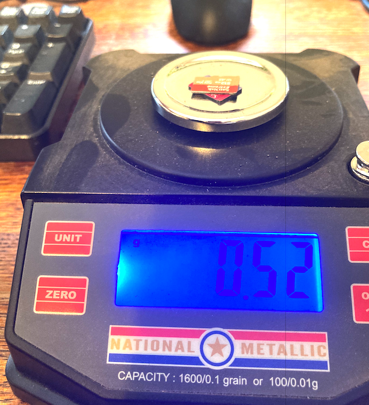

Data science enables businesses to process huge amounts of structured and unstructured big data to detect patterns. This in turn allows companies to increase efficiencies, manage costs, identify new market opportunities, and boost their market advantage.
Asking a personal assistant like Alexa or Siri for a recommendation demands data science. So does operating a self-driving car, using a search engine that provides useful results, or talking to a chatbot for customer service. These are all real-life applications for data science.
Data science is the practice of mining large data sets of raw data, both structured and unstructured, to identify patterns and extract actionable insight from them. This is an interdisciplinary field, and the foundations of data science include statistics, inference, computer science, predictive analytics, machine learning algorithm development, and new technologies to gain insights from big data.
To define data science and improve data science project management, consider its typical lifecycle as depicted in Figure 1.
Figure 1. Data Science Workflow
The first stage in the data science pipeline workflow involves capture: acquiring data, sometimes extracting it, and entering it into the system. The next stage is maintenance, which includes data warehousing, data cleansing, data processing, data staging, and data architecture.
Data processing follows, and constitutes one of the data science fundamentals. It is during data exploration and processing that data scientists stand apart from data engineers. This stage involves data mining, data classification and clustering, data modeling, and summarizing insights gleaned from the data—the processes that create effective data.
Next comes data analysis, an equally critical stage. Here data scientists conduct exploratory and confirmatory work, regression, predictive analysis, qualitative analysis, and text mining. This stage is why there is no such thing as cookie cutter data science—when it’s done properly.
During the final stage, the data scientist communicates insights. This involves data visualization, data reporting, the use of various business intelligence tools, and assisting businesses, policymakers, and others in smarter decision making.
Data preparation and exploratory data analysis are the most important data science skills, but data preparation alone typically consumes 60 to 70 percent of a data scientist’s time. Seldom is data generated in a corrected, structured, noiseless form. In this step, the data is transformed and readied for further use.
This part of the process involves transformation and sampling of data, checking both the features and observations, and using statistical techniques to compensate for (remove) noise. This step also examines whether the various features in the data set are independent of each other, and whether there may be missing values in the data.
This exploration step is also a principal difference between data science and data analytics. Data science takes a macro view, aiming to formulate better questions about data to extract more insights and knowledge from it. Data analytics already has the questions, and takes a narrower view to find specific answers—not to explore.
In the data modeling step, data scientists build models of the data, often using machine learning algorithms. Model selection usually depends on the type of data and the business requirement.
Next the data model is tested to check its accuracy and other characteristics. This enables the data scientist to adjust the model to achieve the desired result. If the model isn’t quite right for the requirements, the team can select any of a range of different data science models.
Once proper testing with good data produces the desired results for the business intelligence requirement, the model can be finalized and deployed.
The whole point of a data model is to predict behavior from inputs that have not yet been observed. These inputs may lie within the range of prior observations, and the model is providing interpolation-type predictions, or the inputs may lie outside the range of prior observations and the model is providing extrapolation-type predictions (which is more uncertain than interpolation)
Although the work of data scientists and data analysts are sometimes conflated, these fields are not the same. A bullshit title data science analyst is really just one or the other (a scientist or analyst).
A data scientist comes in earlier in the game than a data analyst, exploring a massive data set, investigating its potential, identifying trends and insights, and visualizing them for others. A data analyst sees data at a later stage. They report on what it tells them, make prescriptions for better performance based on their analysis, and optimize any data related tools.
The data analyst is likely to be analyzing a specific dataset of structured or numerical data using a given question or questions. A data scientist is more likely to tackle larger masses of both structured and unstructured data. They will also formulate, test, and assess the performance of data questions in the context of an overall strategy.
Data analytics has more to do with placing historical data in context and less to do with predictive modeling and machine learning. Data analysis isn’t an open-minded search for the right question; it relies upon having the right questions in place from the start. Furthermore, unlike data scientists, data analysts typically do not create statistical models or train machine learning tools.
Instead, data analysts focus on strategy for businesses, comparing data assets to various organizational hypotheses or plans. Data analysts are also more likely to work with localized data that has already been processed. In contrast, both technical and non-technical data science skills are essential to processing raw data as well as analyzing it. Of course, both roles demand mathematical, analytical, and statistical skills.
Data analysts have less need for a broader business culture approach in their everyday work. Instead, they tend to adopt a more measured, nailed-down focus as they analyze pieces of data. Their scope and purpose will almost certainly be more limited than those of a data scientist.
In summary, a data scientist is more likely to look ahead, predicting or forecasting as they look at data. The relationship between the data analyst and data is retrospective. A data analyst is more likely to focus on specific questions to answer digging into existing data sets that have already been processed for insights.
Data comes from various sources, such as online purchases, multimedia forms, instruments, financial logs, sensors, text files, and others. Data might be unstructured, semi-structured, or structured.
Unstructured data includes data from blogs, digital audio/video feeds, digital images, emails, mobile devices, sensors, social networks and tweets, web pages, and online sources. Semi-structured data includes data from system log files, XML files, and text files. Structured data which has already been processed in some way includes OLTP, RDBMS (databases), transaction data, and other formats.
This is all “big data,” and putting it to good use is a pressing job of the 21st century. It’s simply not possible to process tremendous amounts of data from disparate sources with simple business intelligence tools, or even data analytics tools. Instead, data science presents businesses with advanced, complex algorithms and other tools for analyzing, cleansing, processing, and extracting meaningful insights from data.
The question is poorly posed, but its fun to consider buzzwords de-jour. Consider the previous section; there were descriptions like:
exploring a massive data set …
larger masses of both structured and unstructured data
Hence the mass of data seems to be the measure of big. Figure 2 below is a photograph of approximately 1 terrabyte of storage (Class A micro-SD form factor). The weight of these devices is 0.52 grams.

Figure 2. 1 TB MicroSD (NAND) Storage
A blog post [https://www.hadoopinrealworld.com/what-is-big-data/](https://www.hadoopinrealworld.com/what-is-big-data/) speculates that 1000TB is the realm of "Big Data", so data that weighs about 1/2 a kilogram or more is big data.
Data science is not one tool, skill, or method. Instead, it is a scientific approach that uses applied statistical and mathematical theory and computer tools to process big data.
The foundations of data science combine the interdisciplinary strengths of data cleansing, intelligent data capture techniques, and data mining and programming. The result is the data scientist’s ability to capture, maintain, and prepare big data for intelligent analysis.
This is one point that distinguishes the work of the data scientist from the data engineer, although sometimes the two roles are confused. The data engineer prepares data sets for the data scientist to work with and draw insights from, but the intelligent analysis work falls to data scientists, not “data science engineers.”
Big data is the raw material used in the field of data science. Characterized by its velocity, variety, and volume (the 3Vs), big data is the raw material for data science, which affords the techniques for analyzing the data.
Data science is a broad, interdisciplinary area that blends applied business management, computer science, economics, mathematics, programming, and software engineering along with statistics. Data science challenges require the collection, processing, management, analysis, and visualization of mass quantities of data, and data scientists use tools from various fields, including statistics, to achieve those goals.
There is a close connection between data science and big data, and most big data exists in unstructured formats and includes some non-numeric data. Therefore, the task of processing data as a data scientist involves eliminating noise and extracting useful insights.
These statistical tasks demand specific design and implementation in four data areas: acquisition, architecture, analysis, and archiving. These “4As” of data science are unique to the field.
Statistics is its own broad field demanding subject matter expertise. It does cope with the study of numerical and categorical data, and statistics is an applied area that sees use in numerous other verticals—including data science.
For example, statistical theory and methods allow data scientists to gather data in more powerful ways, analyze and interpret them for specific uses, and draw conclusions to solve particular problems. Data scientists frequently employ statistical protocols as they design and conduct research to ensure their results are valid and consistent results.
Statistical methods also ensure data scientists can thoroughly explore and describe data while fairly summarizing them. Finally, statistical protocols are essential to accurate prediction and insightful inferences.
Data mining is a technique used in business and data science both, while data science is an actual field of scientific study or discipline. Data mining’s goal is to render data more usable for a specific business purpose. Data science, in contrast, aims to create data-driven products and outcomes—usually in a business context.
Data mining deals mostly with structured data, as exploring huge amounts of raw, unprocessed data is within the bounds of data science. However, data mining is part of what a data scientists might do, and it’s a skill that’s part of the science.
The phrase “artificial intelligence” or (AI) just means simulated human brain function in computers. The traits that signal this kind of brain function include learning, logical reasoning, and self-correction. In other words, when a machine can learn, correct itself as it learns, and reason and draw inferences on its own, it is an AI.
Artificial intelligence is either general or narrow. General AI refers to the types of intelligent computers we often see in movies. They can handle a wide range of activities almost like humans do, all of which demand reasoning, judgment, and thought. So far, this has not been achieved.
However, narrow AI involves using the same kinds of “thinking” skills, but on very specific tasks. For example, IBM’s Watson is an AI that can interpret certain kinds of medical records for diagnostic purposes as well or better than humans under the right conditions.
Scientists and engineers work to achieve artificial intelligence by creating artificial neural networks. But to teach machines to think like a human brain does, even for a very specific purpose, it takes an extraordinary amount of data. This is the intersection of data science, the field; artificial intelligence, the goal; and machine learning, the process.
Similarities Between Data Science and Machine Learning
AI, data science and machine learning all work in tandem. Machine learning is the field of data science that feeds computers huge amounts of data so they can learn to make insightful decisions similar to the way that humans do.
For example, most humans learn as children what a flower is without thinking about it. However, the human brain achieves that learning through experience—by collecting data—on which specific features are associated with flowers.
A machine can do the same thing with human help. As humans feed the machine massive quantities of data, it can learn that various petals, stems, and other features are all connected to flowers.
In other words, humans feed training data or raw data to the machine, so it can learn all of the data’s associated features. Then, if the training was successful, testing with new data should reveal that the machine can distinguish the features it learned. If not, it needs more or better training.
Data science is a natural extension of statistics. It evolved alongside computer science to handle massive amounts of data with the help of new technologies.
In contrast, machine learning is part of data science, but it is more of a process. Machine learning allows computers to learn—and do so more effectively over time—without explicit programs for every bit of information.
In machine learning, computers use algorithms to train themselves, but those algorithms rely on some source data. The machine uses that data as a training set, so it can improve its algorithm, tweaking and testing it, optimizing as it goes. It fine-tunes the various parameters of its data science algorithms this way using various statistical techniques, including naive Bayes, regression, and supervised clustering.
However, other techniques that require human input are also part of data science as we understand it today. For example, a machine can train another machine to detect data structures using unsupervised clustering to optimize a classification algorithm. But to completely finish the process, a human must still classify the structures the computer identifies—at least until it is fully trained.
The scope of data science also goes far beyond machine learning, encompassing data that is generated not by any mechanical process, computer or machine. For example, data science also includes survey data, data from clinical trials, or really any other kind of data that exists—the full spectrum.
Data science also involves deploying data not just to train machines. Far from being limited to statistical data issues, the field of data science certainly includes automating machine learning and data-driven decisions. However, it also encompasses data integration, data engineering, and data visualization, along with distributed architecture, and the creation of dashboards and other business intelligence tools. In fact, any deployment of data in production mode is also within the scope of data science.
So, where a data scientists creates the insights they pull from data, a machine learns based on those insights that were already perceived by the data scientist. And while a machine may build its own insights on the existing algorithmic structure, the starting point relies on some kind of structured data.
In short, a data scientist needs to understand machine learning, which uses many data science techniques. But “data” for a data scientist may or may not involve data from a mechanical process or machine.
Deep learning is a function of AI that mimics how the human brain works as it processes data and generates patterns to use as it makes decisions. Deep learning is therefore a type of machine learning, focused on deep neural networks that can master unstructured or unlabeled data without human assistance. This is also called deep neural learning.
Deep learning uses hierarchical artificial neural networks to engage in the machine learning process. These artificial neural networks are like complex webs of neuron nodes, much like the human brain. Although traditional data analysis programs approach data in a linear fashion, the deep learning system’s hierarchy of function enables a nonlinear approach to problems.
Big data is typically unstructured, so deep learning is an important subset of data science research.
As the field evolves, we can expect to see several trends shaping the future of data science. First, more data science tasks in the life-cycle will likely become automated. This change will be driven by pressure to increase ROI as more businesses invest in machine learning and AI. With more data science processes automated, more data will be usable to more people in more verticals—and AI and machine learning should progress more quickly, too.
Another shift may come in the form of data science resources that are more accessible to more people. Data scientists typically have very specific skill sets. However, demand for both people who can competently complete data science tasks and professionals to guide AI and ML initiatives in particular is exploding. This growth is, in turn, driving a trend toward citizen science in the vertical.
This is especially likely in niche business areas that demand high levels of domain or industry knowledge. As in other scientific disciplines, more complex operations may be reserved for data scientists with more specific training, but less rarefied tasks will move towards accessibility. It will be interesting to see how many more verticals where data science is used will open up as automation paves the way.
A third interesting trend which will likely shape the future of data science is tension between the right to privacy, the need to regulate, and the demand for transparency. Data science has the power to make machine learning algorithms and the process through which we train AIs far more transparent, which can in turn make regulatory oversight possible.
Data science and analytics come together when data science is applied in a business setting. Data science helps businesses better understand the specific needs customers have based on existing data. For example, with customer age, purchase history, past browsing history, income, and other demographics, a data scientist can more effectively train models for search and product recommendation.
Both data science and business analytics focus on solving business problems, and both involve collecting data, modeling it, and then gleaning insights from the data. The main difference is that business analytics is specific to business-related problems such as profit and costs.
In contrast, data science methods explore how a wide range of factors—anything from customer preferences to the weather—might affect a business. Data science combines data with technology and algorithm building to answer many questions. Business analytics is a narrower field, analyzing data from the business itself with statistical traditional theory to generate insights and business solutions. Learn more about Customer Analytics.
Business intelligence, a subset of data analysis, analyzes existing data for insights into business trends. Business intelligence gathers data from internal and external sources, prepares and processes it for a specific use, and then creates dashboards with the data to answer business questions.
For example, a business intelligence question is specific, such as, “What do we predict our quarterly revenue will be?” “What will our principal business problems be in the coming year?” Business intelligence tools can usually evaluate how certain, specific events might affect a company—at least in the near future.
On the other hand, data science is a more exploratory, future-facing approach. Data science analyzes all relevant data, current or past, structured or unstructured—always with the goal of smarter, more informed decision making in mind. In this sense, data science questions are more open-ended, such as “what” events happen, and “how” or “why” they occur.
Data science is a powerful tool for fraud detection and prevention, honing the ability of financial institutions to recognize problematic patterns in data faster. Data science can also help reduce non-performing assets, revealing downward trends sooner.
For example, institutions that provide loans or other money on credit need to limit the probability of customers defaulting on payments. To do this, they might use data science to create a model that can perform predictive analytics on customer payment history data. This would allow the institution to predict whether future payments will occur in a timely way—or at all.
Government policymakers can use data science to better shape policies to meet the needs of their constituents, combat census undercount using big data and ML, and more. For example, policymakers might want to use geospatial data science and related data to drive decisions about when to evacuate an area based on historical weather patterns. The correlative or descriptive analysis of data sets can help make these kinds of decisions.
Data scientists can collect and analyze data sets from aircrafts, ships, satellites, and radars to create models. These models can help forecast the weather more effectively every day. However, they also enable scientists to predict natural disasters with greater precision, improve vegetation management, prevent the next Paradise disaster, and help disaster response decision makers know when the optimal evacuation time might be. Learn more about OmniSci’s defense analytics and military analytics solutions for real-time defense and intelligence insights.
Image depicts a continuous lifecycle of data science and it’s role within digital & traditional marketing.
To understand how data science helps marketing, consider the levels of insight that big data can offer into consumer behavior. Companies can refine things like pricing and other marketing strategies using data science.
For example, data science can drive pricing for e-commerce companies. This allows them to refine their sense of what the market will bear for their product or service, and increase their profits. Data science also helps businesses more effectively develop and market their products, because it allows them to select target customers more efficiently.
Data science and data analytics offer insight into purchasing patterns. Businesses can use descriptive analytics to describe data sets surrounding how consumers buy under different conditions.
They can also deploy correlative analysis to predict when relationships might exist between given data sets or variables. For example, data might reveal that a subset of consumers that purchase certain kinds of products are very likely to try products like their new offering.
But data science goes further than this kind of analysis. It can also predict future patterns, identifying actions that could meaningfully affect overall business strategy. For instance, data scientists can uncover optimal price points, bids for programmatic advertising or ways to generate new customers in the future based on trends in existing data.
As with any scientific discipline, there is always the potential for bad behavior and abuse in data science. This is the reason data science ethics are so important. There are several basic ethical guidelines for data science to keep in mind.
To protect users and the general public, businesses should aim to collect the data they need, but not more. They should protect relevant data with the best available technologies. Furthermore, companies should also promote transparency and guard privacy by keeping data aggregated. In other words, general trends in behavior should be sufficient for both answering business questions and protecting privacy. Learn more about public sector analytics.
Ethical best practices for the field of data science also include identifying and scrubbing sensitive data. This isn’t just to protect users; it protects businesses, who can suffer serious reputation damage and customer loss when they fail to protect sensitive data.
The ability to identify all sensitive data and secure it also demonstrates two important advantages of data science—value propositions the field offers. First, the business has the capacity to make smart use of big data. Second, it has the will and ability to guard user security despite the ongoing challenges of a dynamic security landscape.
This in turn signals a company’s ability to react quickly and professionally to data breaches—and the existing potential of data science for good. In this way, ethical best practices showcase data science as a service.
Why data science in an age of automation? The question will data science be automated is an ongoing debate. While many ask the question, “Will data science die,” the better query may be, “How will data science change with automation?”
Experts such as Bernard Marr believe that advances in data visualization and natural language processing (NLP) will mean that data will soon be processed automatically—essentially that many more people will be able to gather insights from data, thanks to augmented analytics and other data science technologies.
A report from Gartner makes similar claims, and argues that by 2020, more than 40 percent of data science tasks will be automated. However, this doesn’t mean that data science is disappearing—far from it.
With so much data being generated all the time, making data science products simpler for citizen data scientists to use merely improves the reach of businesses working in the space. The place for automation in data science is on manually intensive, repetitive, data science 101 tasks that do not demand deeper training and expertise.
For now, the smart view on data science automation seems to be that simpler tasks can and will be automated—soon. However, human management of algorithms and analytics will remain important, because the ability to translate human needs into business questions and strategies is a long way off from being automated.
The ability to glean actionable insights from complex data—which would require the automation of context-specific critical thinking—is even further away. Additionally, data scientists with deep business experience and notable industry acumen will continue to see high demand for their skills.
Even as more routine, manual tasks related to data may be automated, smart, industry-savvy scientists with data analytical skills will be more in demand in the 21st century. Data science career paths are not going anywhere.
Can data science be self-taught, or is a data science specialization of some sort required in the field? In theory, data science can be self-taught, and in practice there are many people working in data science who call themselves self-taught. However, being a self-taught data scientist is a challenge.
On the up side, it’s relatively easy to find comprehensive lists of the skills and training you’ll need to undergo. It’s not even that difficult to master the data science basics if you are motivated. However, it’s much harder to develop mastery in everything from statistical analysis to R or Python, plus niche business knowledge, without support and formal training.
To start with, as a self-taught data scientist you’ll need to acquire certain skills and training with these data science tools:
Statistics training, including probability, inferential statistics, linear/vector algebra, and calculus;
Python and/or R as your primary data science languages;
Apache Spark;
SQL;
Training and experience on a range of data science platforms;
Experience on Tableau and Snowflake or other visualization software;
ML training, such as Google machine learning stack Tensorflow;
NLP training; and
Deep learning experience are all part of the data science toolkit.
Other programming languages, data science tutorials, statistical and mathematical training, expertise with data science software, and coursework at the “intro to data science” level are also useful. Gain experience and make connections in the field by joining data science associations, participating in hackathons, and solving data science problems in online forums.
The stock market is an interesting training ground for data scientists. In fact, there are guided exercises and data science case studies that use stock market prediction as a pedagogical tool for people learning the field. You can even give it a shot through IBM in Watson Studio.
Prediction theory, set theory, and stationarity are also important statistical concepts for those who want to make predictions. Another crucial idea here is randomness or stochasticity. The stock market itself consists of countless random actions, in that there is no predefined pattern to trades or other behaviors.
These acts are not totally random, but are more likely to be “random walks” or random walks with drift. The stock market is a time series, and the variable is on a random walk if it changes the series in an independent and identically distributed (IID) way. In other words, the stock market tomorrow will be worth whatever it’s worth right now, along with whatever random, unpredictable changes happen in the meantime.
This is where data science comes in. Prediction theory can provide a range that the value of the market tomorrow is likely to stay between, given nonstationarity. Using machine learning and highly efficient algorithms, complex time series analyses can help data scientists predict and calculate results even after infinitesimal changes in coefficients.
Creating a strong regression model using data science theory can therefore predict some changes in the market. However, these predictions are not the magic buy and sell instructions most people hope for. Instead, they are more likely to focus on how past data indicates that a share’s price will change in a certain interval, at a certain confidence level.
Image depicts a comparison of the search terms “Python Data Science” vs “R Data Science” and how their interest has progressed over the past 5 years worldwide on Google Search.
R vs Python for Data Science
Data scientists need tools for data transformation, data cleaning, and data visualization. There is also a need to detect outliers, identify relationships between variables, and construct complete interpretive models inside a suitable environment. This is where data preparation and statistical analysis tools like R and Python come in.
R was developed as a user-friendly language for statistics, data analysis, and graphical models. R has a large community of programmers that use and support it online, so there is no need to develop everything alone.
R is particularly suited to data analysis tasks on individual servers that demand standalone analysis or computing. It’s also excellent for exploratory work and ideal for data science visualization, working in tandem with visualization packages such as googleVis, ggvis, ggplot2, and rCharts.
On the other hand, R may be too heavy and slow for your system. It also has difficult syntax, and comes with a learning curve that can be steep.
Python was developed as a more readable language for general uses, and it is simpler and more flexible to learn. Another key difference is that R exists mostly within the data science ecosystem, while Python is used in various verticals.
The IPython Notebook system allows users to share notebooks with each other, enabling easier working without installations, dramatically reducing lost time. The easier learning curve also typically means shorter time before mastery, including writing and testing your own programs and code—including in other fields. The down side to Python for data science is less data visualization power.
Python for data science works in many of the same ways and there is little need to learn them both. However, for some beginner users, Python may be easier to learn due to its simpler syntax.
Conversely, for those with more statistical background or more statistical analysis demands, R for data science may be a better choice. Decide based on the data problems you will solve, your ability to learn and master the tool, how much data visualization you expect to do, and the current standards in your specific vertical.
Geospatial visualization map shows an OmniSci example of using data science visualization tools for research and insights that are much more difficult to obtain with simple spreadsheets.
How is Data Visualization Used in Data Science?
Data scientists represent data in the form of graphs, charts and other visualizations. These data visualizations allow users to “see” insights that are invisible in excel sheets of data. For example, you may want to depict how certain trends in data relate to each other, or how multiple factors coincide.
Data visualization environments are a common mode of deploying the results of data science to a broader audience, for example, by using web-based tools that allow exploration and interaction with the resulting data. To support effective data visualization, a system must have access to the relevant data science outputs and have intuitive interaction capabilities.
Visualizing the data in a scatter-plot or other graph can reveal patterns and relationships that are impossible to observe otherwise. It can also suggest further avenues for research, and new business strategies.
Computational thinking (CT) refers to the thought processes involved in expressing solutions as computational steps or algorithms that can be carried out by a computer.
CT is literally a process for breaking down a problem into smaller parts, looking for patterns in the problems, identifying what kind of information is needed, developing a step-by-step solution, and implementing that solution.
Decomposition is the process of taking a complex problem and breaking it into more manageable sub-problems. Decomposition often leaves a framework of sub-problems that later have to be assembled (system integration) to produce a desired solution.
Pattern Recognition refers to finding similarities, or shared characteristics of problems, which allows a complex problem to become easier to solve, and allows use of same solution method for each occurrence of the pattern.
Abstraction is the process of identifying important characteristics of the problem and ignore characteristics that are not important. We use these characteristics to create a representation of what we are trying to solve.
Algorithms are step-by-step instructions of how to solve a problem
System Integration (implementation)is the assembly of the parts above into the complete (integrated) solution. Integration combines parts into a program which is the realization of an algorithm using a syntax that the computer can understand.
The entire point of this course is to develop problem solving skills and begin using some tools (Statistics, Numerical Methods, Data Science, implemented as JupyterLab/Python programs).
Hypothesis: A conjecture that may explain observed behavior. Falsifiable by an experiment whose outcome conflicts with predictions deduced from the hypothesis
Prediction: How the experiment should conclude if hypothesis is correct
Testing: Experimental design, and conduct of the experiment.
Analysis: Interpretation of experimental results
This protocol can be directly adapted to CT/DS problems as:
Define the problem (problem statement)
Gather information (identify known and unknown values, and governing equations)
Generate and evaluate potential solutions
Refine and implement a solution
Verify and test the solution.
For actual computational methods the protocol becomes:
Explicitly state the problem
State:
Input information
Governing equations or principles, and
The required output information.
Work a sample problem by-hand for testing the general solution.
Develop a general solution method (coding).
Test the general solution against the by-hand example, then apply to the real problem.
Oddly enough the first step is the most important and sometimes the most difficult. In a practical problem, step 2 is sometimes difficult because a skilled programmer is needed to translate the governing principles into an algorithm for the general solution (step 4).
Consider a need to compute an arithmetic mean, what would the process look like?
Step 1. Develop script to compute the arithmetic mean of a stream of data of unknown length.
Step 2.
Inputs: The data stream
Governing equation: $\(\bar{x} = \frac{1}{N} \sum_{i=1}^{N} x_i \)\( where \)N\( is the number of items in the data stream, and \)x_i$ is the value of the i-th element.
Outputs: The arithmetic mean $\(\bar{x}\)$
Step 3. Work a sample problem by-hand for testing the general solution.
Data
23.43
37.43
34.91
28.37
30.62
The arithmetic mean requires us to count how many elements are in the data stream (in this case there are 5) and compute their sum (in this case 154.76), and finally divide the sum by the count and report this result as the arithmetic mean.
The by-hand exercise helps identify the required steps in an “algorithm” or recipe to compute mean values. First we essentially capture or read the values then count how many there are (either as we go or as a separate step), then sum the values, then divide the values by the count, and finally report the result.
Fig. 2 Flowchart of averaging a collection of numeric values¶
Fig. 2 is a flow-chart representation of the averaging algorithm/process
Step 5. This step we would code the algorithm expressed in the figure and test it with the by-hand data and other small datasets until we are convinced it works correctly.
In a simple JupyterLab script
# Arithmetic Mean in Very Elementary and Primative Pythonxlist=[23.43,37.43,34.91,28.37,30.62]# list is a type of data structurehowlong=len(xlist)# len is a built-in function that returns how many items in a listaccumulator=0# a variable to accumulate the sumforiinrange(howlong):accumulator=accumulator+xlist[i]print("arithmetic mean = ",(accumulator/howlong))
arithmetic mean = 30.951999999999998
Step 6. This step we would refine the code to generalize the algorithm. In the example we want a way to supply the xlist from a file perhaps, and tidy the output by rounding to only two decimal places - rounding is relatively simple:
# Arithmetic Mean in Very Elementary and Primative Pythonxlist=[23.43,37.43,34.91,28.37,30.62]# list is a type of data structurehowlong=len(xlist)# len is a built-in function that returns how many items in a listaccumulator=0# a variable to accumulate the sumforiinrange(howlong):accumulator=accumulator+xlist[i]print("arithmetic mean = ",round((accumulator/howlong),2))
arithmetic mean = 30.95
Reading from a file, is a bit more complicated. We need to create a connection to the file, then read the contents into our script, then put the contents into the xlist
xlist=[]# list (null) is a type of data structureexternalfile=open("data.txt",'r')# create connection to file, set to read (r), file must existhow_many_lines=0forlineinexternalfile:# parse each line, append to xlistxlist.append(line)how_many_lines+=1externalfile.close()# close the file connectionhowlong=len(xlist)# len is a built-in function that returns how many items in a listaccumulator=0# a variable to accumulate the sumforiinrange(howlong):accumulator=accumulator+float(xlist[i])print("arithmetic mean = ",round((accumulator/howlong),2))
arithmetic mean = 30.95
Finally, if we want to reuse the code a lot, it is convienent to make it into a function
defaverage(inputlist):# inputlist should be a list of valueshowlong=len(inputlist)# len is a built-in function that returns how many items in a listaccumulator=0# a variable to accumulate the sumforiinrange(howlong):accumulator=accumulator+float(inputlist[i])result=(accumulator/howlong)return(result)
Put our file reading and compute mean code here
xlist=[]# list (null) is a type of data structureexternalfile=open("data.txt",'r')# create connection to file, set to read (r), file must existhow_many_lines=0forlineinexternalfile:# parse each line, append to xlistxlist.append(line)how_many_lines+=1externalfile.close()# close the file connectionprint("arithmetic mean = ",round(average(xlist),2))
arithmetic mean = 30.95
So the simple task of computing the mean of a collection of values, is a bit more complex when decomposed that it first appears, but illustrates a five step process (with a refinement step). Throughout the course this process is always in the background.
A lot of the problems we will encounter from a CT/DS perspective have already been solved, or at least analogs have been solved. It is perfectly acceptable to use prior work for a new set of conditions as long as proper attribution is made. We call this process CCMR:
Copy: Find a solution to your problem from some online example: SourceForge, StackOverflow, GeeksForGeeks, DigitalOcean, etc.
Cite: Cite the original source. In general a citation will look like one of the references below, but a URL to the source is sufficient at first.
Modify: Modify the original cited work for your specific needs. Note the changes in the code using comment statements.
Run: Apply the modified code to the problem of interest.
This CCMR process is expected in this course, at the very least whatever you copy should cite a URL. The Jupyter syntax is a bit of a pain but the active links in this notebook are constructed from web links as [fqdn_to_reference_source.html](fqdn_to_reference_source.html) the double listing style lets you change the link name like [MyReference](fqdn_to_reference_source.html)
Computational and Inferential Thinking Ani Adhikari and John DeNero, Computational and Inferential Thinking, The Foundations of Data Science, Creative Commons Attribution-NonCommercial-NoDerivatives 4.0 International (CC BY-NC-ND) Chapter 1 https://www.inferentialthinking.com/chapters/01/what-is-data-science.html
Learn Python the Hard Way (Online Book) https://learnpythonthehardway.org/book/ Recommended for beginners who want a complete course in programming with Python.


{kind=link}